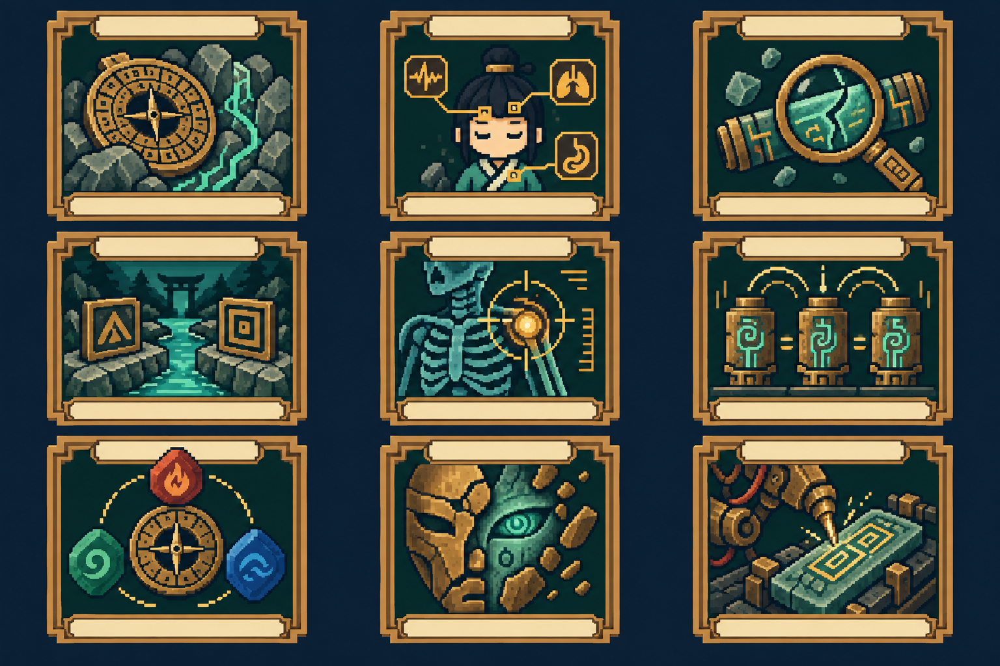

15 條分支 · 45 張技能卡。數值為原型提案；卡牌與永久仙術分開。圖版每列對應一階、每欄對應一條路徑。
護體、蓄勢、御器
獲得 6 護體、1 蓄勢。
獲得 16 護體、2 蓄勢。
消耗全部蓄勢；造成 10＋每層 3 傷害。
獲得 5 護體；至下回合開始保留最多 8 護體。
移除自己 1 層虛弱；抽 1 張牌，獲得 4 護體。
本戰每回合第一次打出山術技能牌後，獲得 3 護體。唯一。
造成 6 傷害；獲得 1 劍印。
消耗全部劍印；獲得 4＋每印 4 護體。
消耗全部劍印；對所有敵人造成 6＋每印 3 傷害。移除。
治療、祛邪、丹毒
恢復 3 生命，獲得 3 護體。移除。
移除自己 1 層虛弱與 1 層中毒；獲得 1 藥引。
恢復 6 生命，獲得 8 護體。移除；不增加年齡上限、不復活。
移除自己最多 2 層中毒；獲得 5 護體。
敵方單體獲得 2 層虛弱；獲得 1 藥引。
造成 12 傷害；若本回合已淨化，另恢復 4 生命。移除。
獲得 2 藥引；抽 1 張牌。
消耗最多 2 藥引；敵方單體獲得 2＋每份 2 層中毒。
消耗全部藥引；每份恢復 2 生命、獲得 3 護體。移除。
命印、轉移、因果代價
敵方單體獲得 2 命印；抽 1 張牌。
敵方單體獲得 1 命印；每層命印使自己獲得 3 護體。
造成 10 傷害；目標有至少 3 命印時另造成 8 傷害。
消耗目標全部命印；造成 4＋每印 4 傷害。
移除目標最多 12 護體；自己獲得同量護體；目標獲得 1 命印。
消耗目標 3 命印；取消該目標本回合一個已預告普通攻擊動作。移除；重大命運干涉事件＋1。精英以上僅減半該動作傷害。
獲得 7 護體；若任一敵人有命印，再獲得 3 護體。
將敵方單體最多 3 命印移給另一敵人；僅一名敵人時改為該敵獲得 1 命印。抽 1 張。
獲得 14 護體；保留手中至多 2 張牌到下回合。移除；不降低世界擾動。
陣位、識破、器物共鳴

在空陣位放置「山」：立即獲得 4 護體。
在空陣位放置「水」並抽 1 張牌；無空位仍抽牌。
消耗全部陣位；每個陣位對所有敵人造成 4 傷害；山、水、火齊備再獲得 8 護體。
敵方單體獲得 2 破綻；獲得 4 護體。
造成 7 傷害；目標有破綻時抽 1 張牌。
移除目標最多 8 護體，再造成 12 傷害。
在空陣位放置「火」；獲得 3 護體。
選一個已有陣位：山獲得 7 護體；水抽 2 張；火對單體造成 8 傷害。每回合限一次；不消耗陣位。
將至多 2 個已有陣位轉為任選不同元素，不觸發放置效果；獲得 10 護體。
預見、排序、預備應對
查看抽牌堆頂 3 張並排序；抽 1 張。
查看牌頂 1 張：攻擊則對單體造成 7 傷害，否則獲得 7 護體；牌留在頂端。
查看並排序牌頂 5 張；抽 2 張。移除。
若任一敵人本回合預告攻擊，獲得 9 護體；否則抽 2 張。
設一個預備：下一次受攻擊前獲得 8 護體，或下次出攻擊牌前使目標獲得 2 破綻。下個自己回合結束前有效。
獲得 12 護體；若本回合曾觸發預備，抽 2 張。
保留手中 1 張其他牌到下回合；獲得 5 護體。
預測本回合下一張打出的其他牌類型；命中獲得 6 護體並抽 1 張。每回合限一次。
從棄牌堆取回 1 張本回合打出的費用不超過 1 的攻擊牌；費用不變。移除。